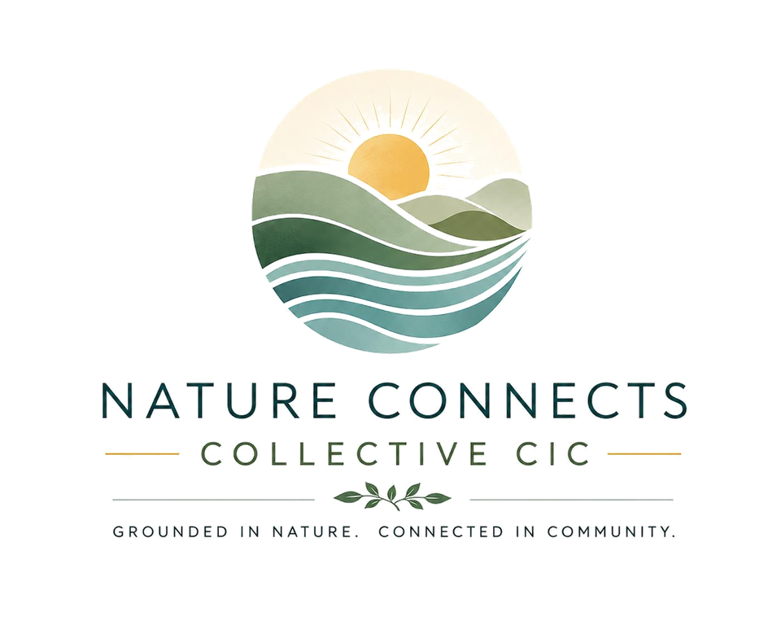
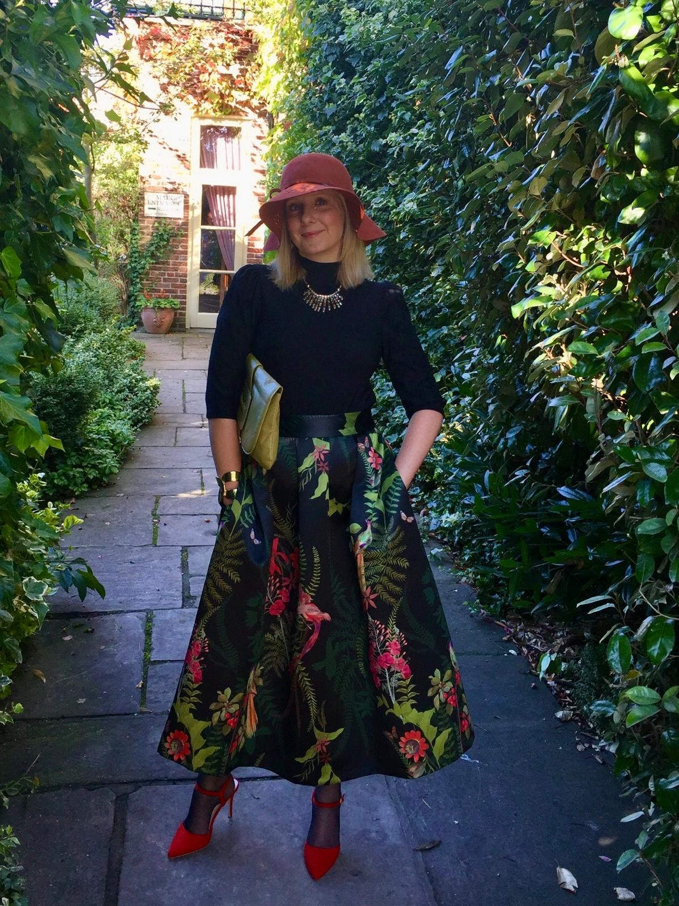
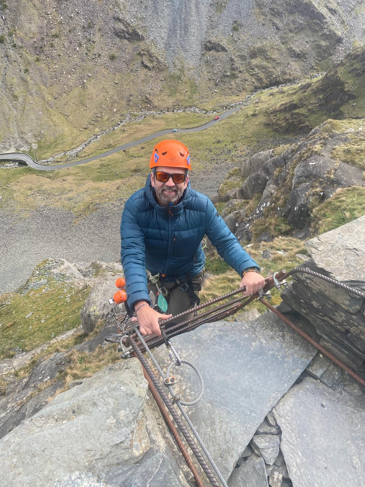

When did we stop
going outside?
Nature Connects Collective CIC gets people back outside. Wellbeing in nature, bushcraft, coastal adventures, outdoor cooking and creative sessions designed for schools, families and communities in Runcorn, Widnes and across Cheshire and the North West.
People feel better outside. We curate programmes around this fact.
Grounded in Nature. Connected in Community.
Community Interest Company · Est. Cheshire & North WestNature-based wellbeing, close to home
Everything we do starts with one idea: that being outdoors can change how people feel. Not as a theory but something we notice, often within the first hour. Each programme we create is shaped around the people taking part, not the other way round.
Wellbeing in Nature
Sessions that use the outdoors as the catalyst for wellness, not just a backdrop. Being in nature, away from screens, routines and four walls, does something to people. We help that process along.
Nature Connection
Walks, seasonal rituals, slowing down. Most people are more disconnected from the natural world than they realise. These sessions gently change that, no equipment needed, no experience required.
Bushcraft & Outdoor Skills
Fire making, shelter building, foraging, knots. The kind of skills people used to learn as a matter of course. Turns out learning them as an adult or a child is still just as satisfying.
Outdoor Cooking
Cooking over fire, from scratch, outside. It sounds simple because it is, and that simplicity is the point. Something shifts when you make and share food outdoors with other people.
Outdoor Activities
Getting people moving, exploring and out of their usual environment. The social stuff that happens alongside the activity is often what people talk about afterwards.
Natural Arts & Crafts
Making things from what you find outside. Land art, weaving, natural dyeing, printing with plants. Quiet, absorbing and genuinely good for you in ways that are hard to explain but easy to feel.
Festivals & Events
We bring a full programme of nature-based activities to festivals and community events. Hands-on, accessible and built for children and families who want to do something, not just watch.
Coastal School
Day trips to the coast that are more than a day out. Participants explore rock pools, forage on the shoreline, read the tide and get to know an ecosystem most people walk past without really seeing.
The people behind the programmes
Nature Connects Collective CIC is led by two experienced facilitators with a shared belief that time spent in nature changes people for the better.

Gemma Hill-Davis
Director & FacilitatorGemma brings over 17 years of experience as a secondary school teacher and head of department, combined with eight years managing an outdoor education centre and nature reserve. That background instilled a deep commitment to safety-first practice that runs through everything Nature Connects Collective does.
Before co-founding Nature Connects Collective CIC, Gemma built and ran a thriving outdoor learning community that regularly brought together local primary schools, interest groups, university students and families at festivals and summer camps. She knows what it takes to create programmes that people keep coming back to.
Gemma invests seriously in her professional development. She holds an enhanced DBS certificate, an Outdoor First Aid certificate, and a certificate in therapeutic outdoor practice for outdoor leaders. She is also an accredited Learning Through Landscapes practitioner and a qualified mental health first aider. That combination shapes how every Nature Connects programme is designed and delivered.
A lover of all things nature and an avid tea drinker, Gemma shares the belief that families are happiest and most connected when they are outside together. Alongside Phill and their daughter Marthy, she is driven by a simple ambition: to help more families find that for themselves.

Phillip Hill-Davis
Co-Director & FacilitatorPhill is an avid hiker and wild camper often taking on long distance, self supported multi day hikes and he is also an accomplished campfire cook, embracing fire and smoke to create something hearty and delicious for the whole family.
Phill has always enjoyed getting outside in nature but his real love for it blossomed with the birth of his daughter and a commitment to get her outside as often as possible and 'raise her wild'. This involved many hours spent in woodlands or along coastlines learning what kit was needed, what was not, rigging tarps for shelter and creating fires to cook all manner of tasty treats. And it was here that Phill witnessed first hand just how powerful an experience being connected to nature can be.
Phill is focussed on passing on his knowledge so that families can be gifted that expertise and feel empowered to take on their own mini adventures without fear of failure or hesitancy to just go and do it!
We work with schools, families, community groups and funders
Each project looks different. What stays the same is that we start by listening to what the group actually needs, what the setting allows and what success looks like for the people involved.
Primary Schools
Outdoor sessions that fit alongside what schools are already doing. We work with teachers to make sure time outside has real value for children's wellbeing and for learning. No prior experience of outdoor education needed from staff.
Families
Sessions designed for families to do together, regardless of age or ability. Low-key, unhurried and often the kind of afternoon that gets talked about for weeks.
Community Groups
We work with local organisations, charities and social prescribing networks who want to offer something different. If you're looking for a nature-based programme to sit alongside your existing provision, get in touch.
Funders & Commissioners
As a registered CIC, our finances are transparent and our assets are locked for community benefit. If you're a funder or commissioner looking to invest in outdoor wellbeing work in Cheshire or the North West, we'd be glad to have a conversation.
Referrers & Partners
Social prescribers, link workers, Public Health, family and youth services, housing and community organisations. If you support people who would benefit from regular time outdoors with others, we'd like to hear what your community needs and where we could fit alongside what's already there.
What guides everything we do
Grounded
We take what we do seriously. Our approach draws on established therapeutic practice and a genuine respect for the environment we work in.
Inclusive
Nobody needs experience of the outdoors to take part. We meet people where they are and build from there.
Community-Led
We're a CIC. That means the communities we work in aren't just our audience. They're the reason we exist.
Therapeutic
We pay attention to how people leave a session compared to how they arrived. That's how we know whether something is working.
Why we started
Nature Connects Collective CIC was set up because the people behind it had seen, first-hand, what happens when people spend meaningful time outdoors. Not as a day trip or a tick-box exercise, but as something regular, purposeful and well-supported. The difference it makes to mental health, to confidence, to how people relate to each other, is hard to argue with.
We're starting in Halton, in Runcorn and Widnes, and work across Cheshire and the North West with schools, community organisations and public health networks. If you're curious about what we do, the best thing is to come and see it.
Community Interest Company
A Community Interest Company is a specific legal structure: it means our assets and any surplus income are locked for community benefit. We can't be bought out or redirected for private gain. For commissioners, grant bodies and local authorities, that matters. It means what we say we're here to do is what we're actually here to do.
We're always open to funding conversations and partnership enquiries. If our work aligns with what you're trying to achieve, let's talk.
Registered CICLet's work together
Whether you're a school, community group, funder or a family looking to get involved, we'd love to hear from you.
Based in Halton, working across
Cheshire and the North West.
We're based in Halton and work across Cheshire and the North West. No enquiry is too small.
Follow our journey